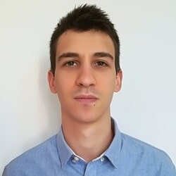

Mi piace mettere in campo le diverse competenze tecniche e teoriche acquisite per raggiungere obiettivi con costanza e dedizione.
Reputo molto importante non fossilizzarsi su alcune tecnologie, ma uscire dalla propria zona di comfort per restare sempre aggiornati e migliorare le proprie competenze.
Nutro un particolare interesse per l'usabilità della tecnologia: quest'ultima non deve essere un ostacolo, ma un aiuto per raggiungere i propri obiettivi.
"There is beauty when something works and works intuitively"
Tesi di laurea: "A domain-independent environment for user-oriented programming of collaborative robots"
Tesi di laurea: "Verifica di vulnerabilità dei sistemi: concetti generali e analisi dello srumento OpenVAS"
Telemedicina e Digitalizzazione dei servizi sanitari
Kline sviluppa e produce piattaforme software integrate, soluzioni tecnologiche e servizi per gli intermediari finanziari
Stage esterno all’università svolto durante il periodo di studi. Collaborazioni occasionali a progetto nel 2020/2021